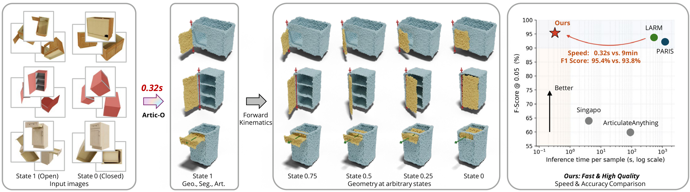
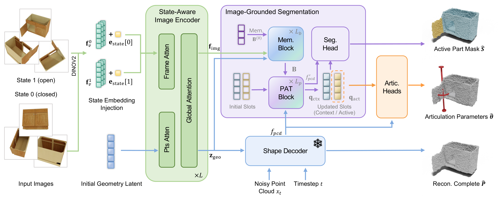
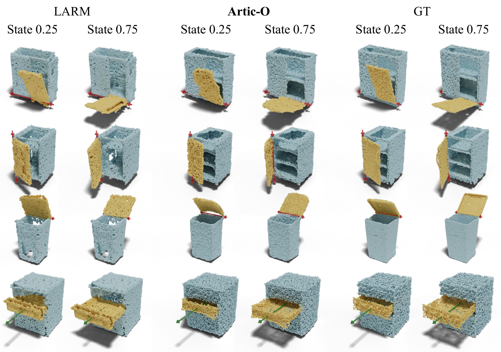
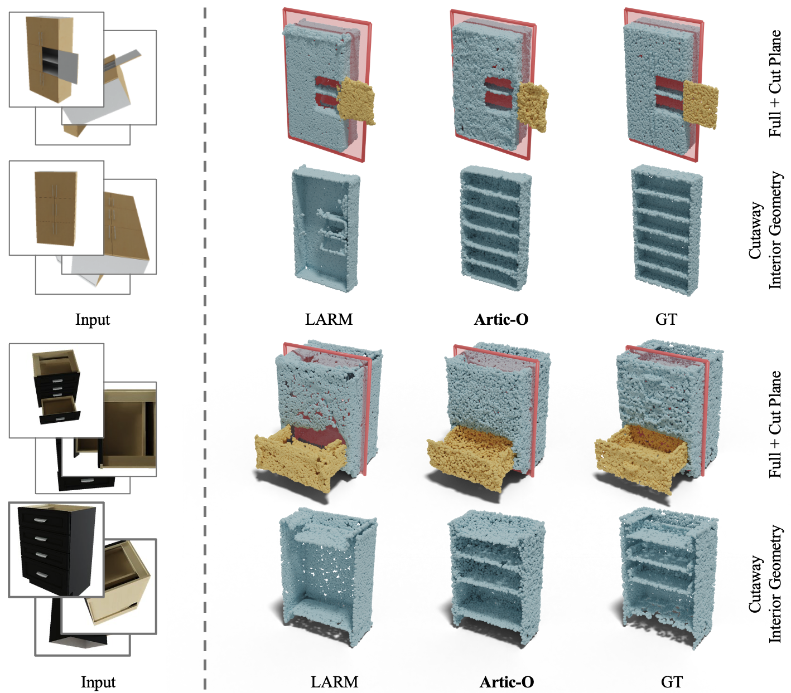
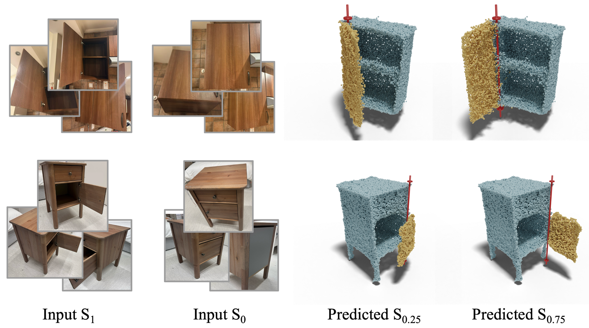

End-to-End Articulated Object Reconstruction via Latent Geometry Learning
1Australian National University 2KAUST
* Work done during the author's research internship at KAUST. † Project lead.

Reconstructing articulated objects from sparse images requires recovering complete geometry, movable parts, and motion parameters. Recent methods typically separate geometry reconstruction, part reasoning, and articulation estimation into different stages. This separation can weaken consistency between shape, active parts, and motion, while also incurring substantial inference cost.
We introduce Artic-O, an end-to-end, feed-forward framework for articulated object reconstruction via latent geometry learning. Instead of fitting geometry in image or view space, Artic-O maps sparse multi-state observations into a pretrained latent geometry space, where a frozen flow-matching decoder provides a complete-shape prior for recovering visible and occluded structures. To connect geometry with articulation, Artic-O fuses visual tokens, geometry latents, and point-wise decoder features in an image-grounded part-reasoning module for active-part segmentation and articulation prediction. We further train the model with a geometry-to-articulation curriculum and a decoupled two-pass strategy to balance reconstruction and part-level supervision.
On PartNet-Mobility, Artic-O achieves strong reconstruction quality while being substantially more efficient than LARM, a strong prior method. It reduces Chamfer Distance, improves F-score, and achieves comparable or better articulation accuracy across most joint metrics, while reducing inference time from 9 minutes to about 0.3 seconds per object.

| Metric | Artic-O | LARM |
|---|---|---|
| Chamfer Distance ↓ | 0.01661 | 0.0196 |
| F1@0.05 ↑ | 0.9578 | 0.9337 |
| Axis angle @0.25 ↑ | 0.9490 | 0.9570 |
| Axis origin @0.15 ↑ | 0.9804 | 0.9690 |
| Motion range @0.3 ↑ | 0.9216 | 0.8550 |
PartNet-Mobility, averaged over five articulation states, on the LARM-comparable subset (n = 255) with deterministic view selection. Artic-O leads on four of five reported metrics.



The release includes evaluation and inference code, the trained checkpoint, and the test split — enough to reproduce the benchmark table above and to run the model on a test object end to end. Training code and the data-construction pipeline are not included.
git clone https://github.com/Wxyxixixi/Artic-O.git cd Artic-O pip install -r requirements.txt bash scripts/fetch_third_party.sh hf download wxyxixixi/artic-o artic_o_s0_36.pth --local-dir ./checkpoints/ hf download wxyxixixi/artic-o-data --repo-type dataset --local-dir ./data/ bash scripts/verify_benchmark.sh
@article{wang2026artic,
title={Artic-O: End-to-End Articulated Object Reconstruction via Latent Geometry Learning},
author={Wang, Xuyang and Li, Zhenyu and Ding, Jian and Slim, Habib and Wonka, Peter and Li, Hongdong and Elhoseiny, Mohamed},
journal={arXiv preprint arXiv:2606.21938},
year={2026}
}